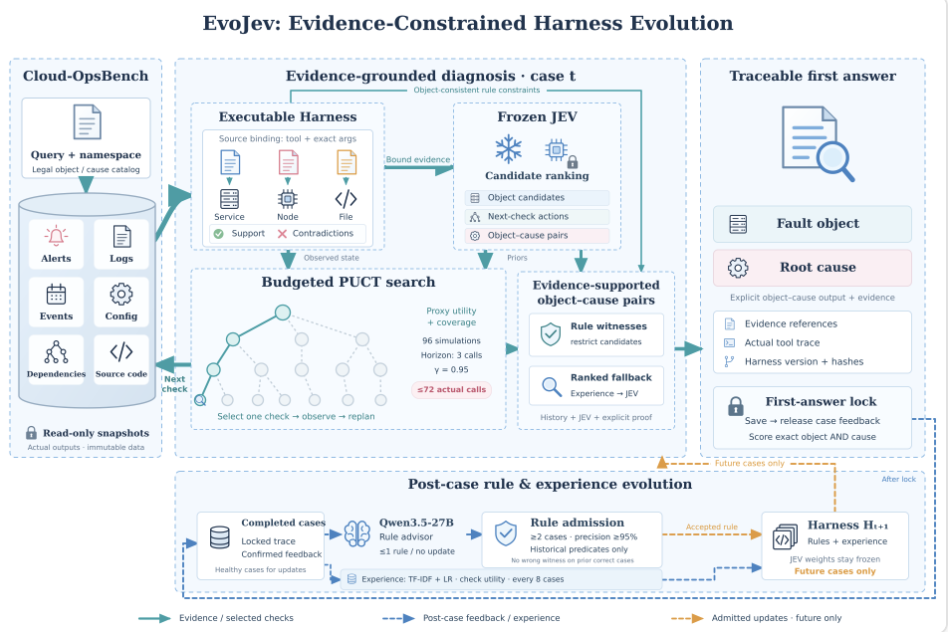

01诊断阶段
EVIDENCE-GROUNDED HARNESS EVOLUTION
从一题诊断，理解整套方法。
冻结的 JEV 引导树搜索获取证据，Harness 验证根因，大模型在首答保存后提炼可靠经验，只改进后续题。

冻结的 JEV 为根因候选和检查动作评分，PUCT 树搜索在固定预算内获取证据，Harness 根据来源一致的证据约束诊断。
每题先保存唯一首答并评分，再由 Qwen3.5-27B 提议通用规则，经历史证据审核通过后写入 Harness，只用于后续题目。
独立的 TF-IDF 与逻辑回归模型每累计完成八题，用全部已完成且流程正常的案例重新拟合，辅助 JEV 排序候选根因，并指导 PUCT 树搜索选择更有区分力的检查，JEV 与 LLM 权重不变。
case_0158第 389 题H82 → H83真实轨迹节选 · 非重新推理
模块流程01 / 08
当前题诊断题后演进
证据与决策路径
JEV WEIGHTS FROZEN当前题后续题动画表示模块衔接，不是实际运行时序。
输入
输出
两种更新频率与独立评分模型。
规则：每题
经验：每八题
模型：独立评分
首答先保存，反馈后释放。
第 389 题用 H82 作答。H83 只用于第 390 题起，不能修改这一题的答案。
本题H82H83后续题
全量在线首答准确率60.21%
454 / 754。对象与原因都正确才计分。
每题诊断一次。异常与缺失输出计错。公开基准此前已被本项目使用，这不是未见基准成绩。80% 目标未达到。
在自己的电脑上启动。
项目根目录执行下方命令。展示系统只需 Python 3.9+，无需模型或 GPU。
python3 scripts/dashboard.py --port 8777